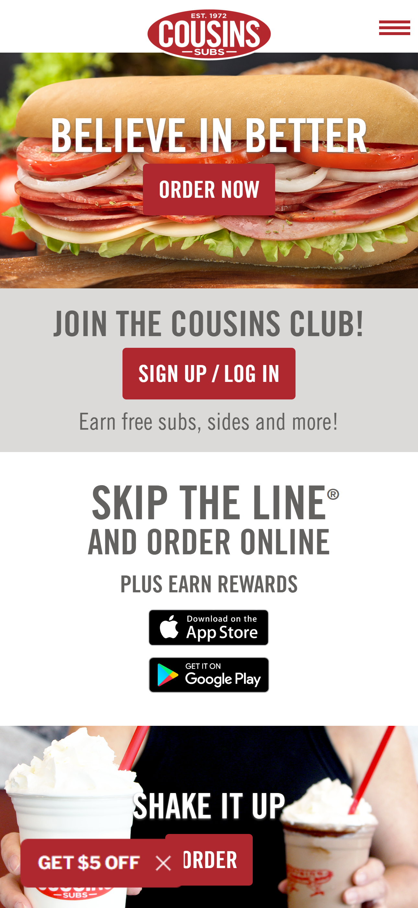
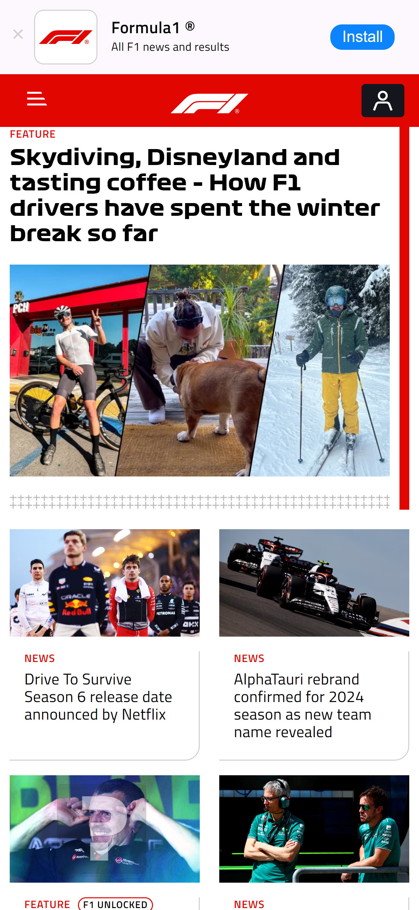
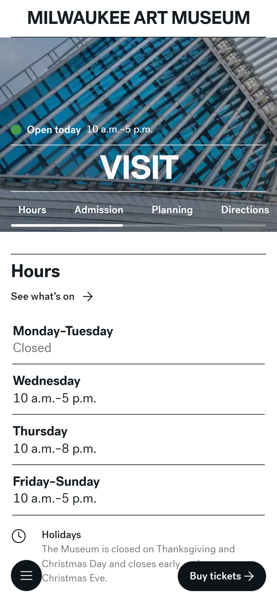

Repetition
Cousins Subs
The design principle, repetition, can be clearly seen on the Cousins Subs’ home page. Repetition is when common elements are repeated to give a clean and consistent feel to the page. On the Cousins Subs’ home page, they use the same color scheme, typography, and button elements throughout the page. This creates a clean and consistent look when users enter the page.
Proximity
Formula One
Proximity, the design principle, is shown throughout the Formula One home page. Proximity is when related items are grouped close together. Proximity gives the users the understanding that certain items are similar and should be looked at as a group. The Formula One home page gives a lot of content at once but through proximity, the content is broken up into similar groups. News and feature articles are grouped together through what is trending, more news, and editor’s picks. Towards the bottom of the page, the schedule for the 2024 season is grouped together and easy to navigate.
White Space
Milwaukee Art Museum
The Milwaukee Art Museum website represents a strong example of including adequate white space and a clean design. The website gives clear information on how to visit the art museum, giving information about hours, admission, how to explore, and more. The site does not over complicate these areas but sides for giving the information with a white background. This draws eyes to the important information and does not make it confusing for users to understand.